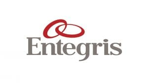
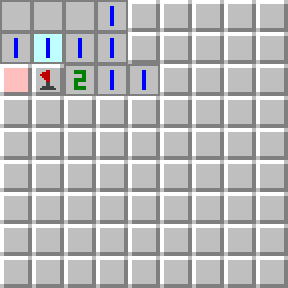

This project was the main project I worked on during my electrical test engineering internship with Entegris last fall.
The goal of the project was to upgrade an existing test system on one of the companys product lines to improve efficiency, reliability, and security. I was responsible for implementing the upgrade, which included adding new hardware components, updating software, and testing the system to ensure it met all performance requirements.
THe project involved upgrading from Windows 7 to Windows 10, replacing legacy hardware components with modern equivalents, and implementing new security protocols to protect against cyber threats. I worked closely with a small team of engineers and the floor technicians to ensure that the upgrade was completed on time and within budget.
Other specifics of the upgrade included transfer of code from VB6 to C#, moving from activeX to .NET frameworks, and integrating with the latest TestStand software.
Overall, the test system upgrade project was a success, resulting in improved performance, increased reliability, and enhanced security for the test system. The project also provided valuable experience in project management, teamwork, and technical skills related to hardware and software integration.
This project was completed as part of a data analytics course I took during the spring semester of 2024.
The goal of the project was to create a Power BI dashboard that visualized healthcare data to provide insights into patient outcomes, resource utilization, and other key metrics. I was responsible for designing and implementing the dashboard, which included data cleaning, data modeling, and visualization.
The project involved working with a large dataset of healthcare records, which required significant data cleaning and transformation to prepare it for analysis. I used Power Query to clean and transform the data, and then created a data model using Power BI's built-in modeling tools.
Once the data model was complete, I created a series of visualizations to display key metrics such as patient outcomes, resource utilization, and cost analysis. I also implemented interactive features such as filters and drill-downs to allow users to explore the data in more detail.
Overall, the Power BI healthcare dashboard project was a success, resulting in a user-friendly and informative dashboard that provided valuable insights into healthcare data. The project also provided valuable experience in data cleaning, data modeling, and visualization using Power BI.
This is one of my favorite projects I have created because I was able to combine my interests in healthcare with the skills I have learned while pursuing a computer science degree at St. Thomas.

One of the first projects I did as a computer science major here at St. Thomas was to build a MatLab MineSweeper Program
The goal of the project was to create a functional version of the classic MineSweeper game using MatLab. I was responsible for designing and implementing the game, which included creating the game board, implementing game logic, and handling user input.
I built this during CISC-130, the introductory programming course at St. Thomas. I took the course online over J-Term and was spending nearly the entirety of each day with lecture then working on assignments. This course was my the first time I had programmed in my life, so this project remains significant to me to this day